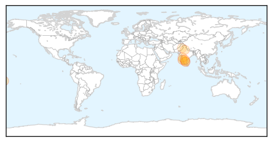
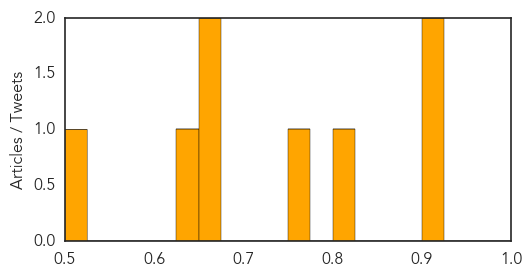
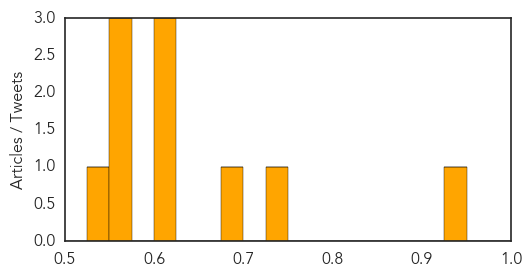

Dengue Fever
30-Day Web Trend
1 alerts, 1 warnings

30-Day Twitter Trend
0 alerts, 0 warnings

Article Locations
Article Confidences
Top Articles:
- 0.912
- INFORMATION AND SERVICES IN GOA. Goa News, Goa Konkani News, Goa Sunaparant News, Goan Konakani News, Goa Video News, Goa Yellow Pages
- 0.901
- Surveillance on Dengue,Chikungunya Intensified
- 0.808
- Chickenpox shows up at LBJ — no vaccine on hand
- 0.753
- In an ominous sign, India transits speedily from infectious to lifestyle diseases
- 0.672
- India's Speedy-And Ominous-Disease Transition
- 0.661
- India's Speedy-And Ominous-Disease Transition
- 0.632
- Nagpur Municipal Corporation assesses preparation to handle dengue cases as monsoon approaches
- 0.513
- Dengue under control: Punjab government
Top Tweets:
-
No tweets found for Jun 10, 2015
Hepatitis
30-Day Web Trend
0 alerts, 0 warnings
30-Day Twitter Trend
0 alerts, 0 warnings

Article Locations
Article Confidences
Top Articles:
- 0.949
- New blood test may reveal every virus you’ve ever had
- 0.733
- New results from first real-world study show comparable effectiveness and safety of Hospira's Inflectra™ (infliximab) in patients with rheumatic diseases switched from reference infliximab, Remicade™
- 0.689
- Press Herald pressing Maine CDC to identify schools with chickenpox outbreaks
- 0.618
- Online comments show support for HPV vaccine but misperceptions too
- 0.618
- Online comments show support for HPV vaccine but misperceptions too
- 0.612
- 'Fake dentist' operating in Melbourne's northern suburbs
- 0.562
- Unregistered dentist charged for potential hepatitis, HIV infections
- 0.562
- Alleged rogue Melbourne dentist charged
- 0.553
- 'Fake dentist' operating in Melbourne's northern suburbs
- 0.530
- Invisible Illness: Living With Lyme Disease In Oregon
Top Tweets:
-
No tweets found for Jun 10, 2015